Blog Posts all posts
Getting Mad @ Tucson 2017-1-3
At first, Tucson seemed pretty cool. First thing we did was walk around downtown. There was a lot of art and music. The downtown is l-shaped and we took a shortcut across some side streets and you could tell there was a tension to the darker, gritty streets. Lots of homeless.
Not until New Year's Day did I decide I wasn't a fan of Tucson. We watched the fireworks over town from a mountain vista West of town and then came back down into town late New Year's Eve. We pulled into a residential neighborhood, drank a ginger beer from Minnesota we had saved for a special occasion along with our celebratory pasta and went to bed.
At 4am we were awoken to our door handle being tried and then our window being banged on. Michelle hollered until the banging quit. An angry tone began muttering this and that, "my daughter's out here, mumble, mumble, "this is my house, open up!"
Confused, Michelle peaked out a slit in the window to see a bald, black head along with a chubby lady smoking a cigarette with her arm's crossed. She considered opening the door but I yelled Michelle's name. After hearing my voice the couple walked back to their idling car in the street and drove off into the night. So, fuck Tucson...
A few days later I decided to take my camera on a bike ride to capture the charm of the city. I also took my bear spray.
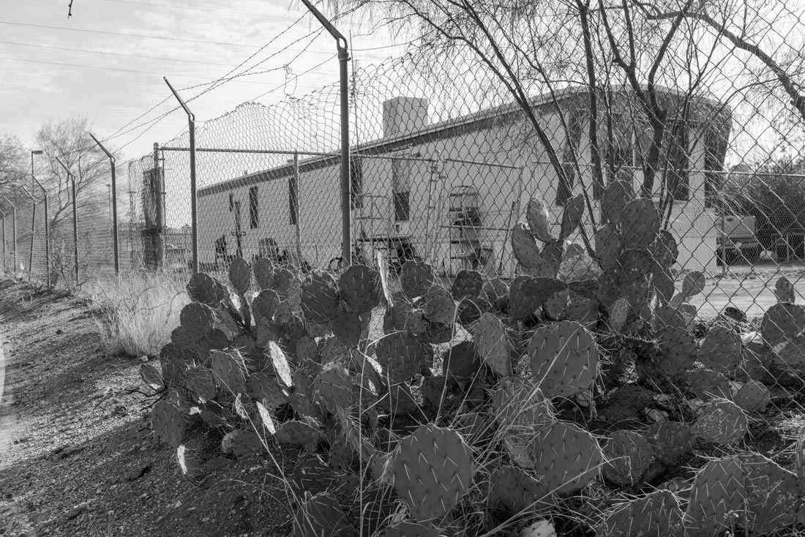Cacti, barbed wire, trailer.
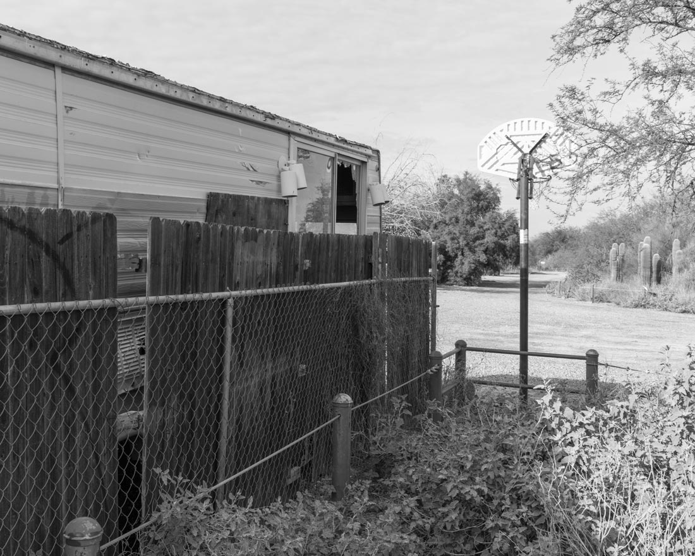Alternative way in

less than desirable
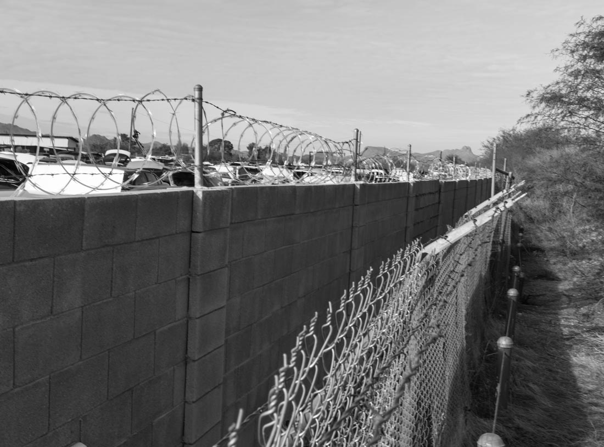concrete wall with concertina wire plus chain link with barbed wire to protect a salvage yard
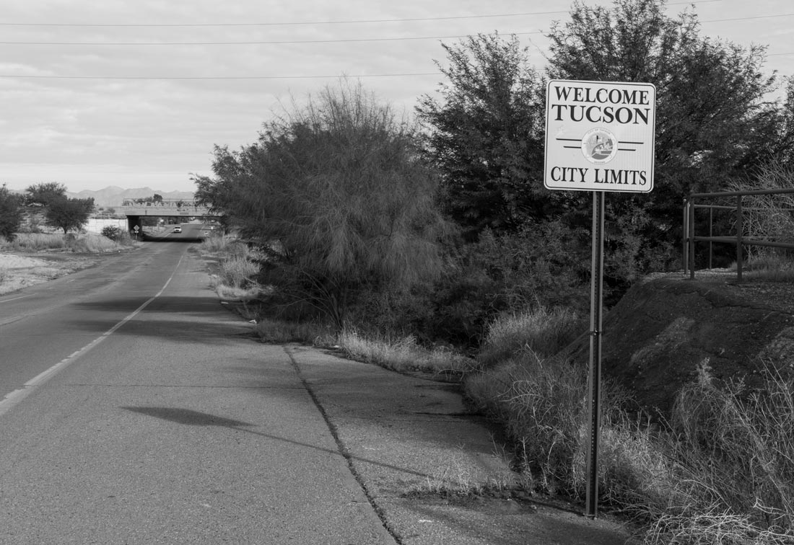Tucson City Limits
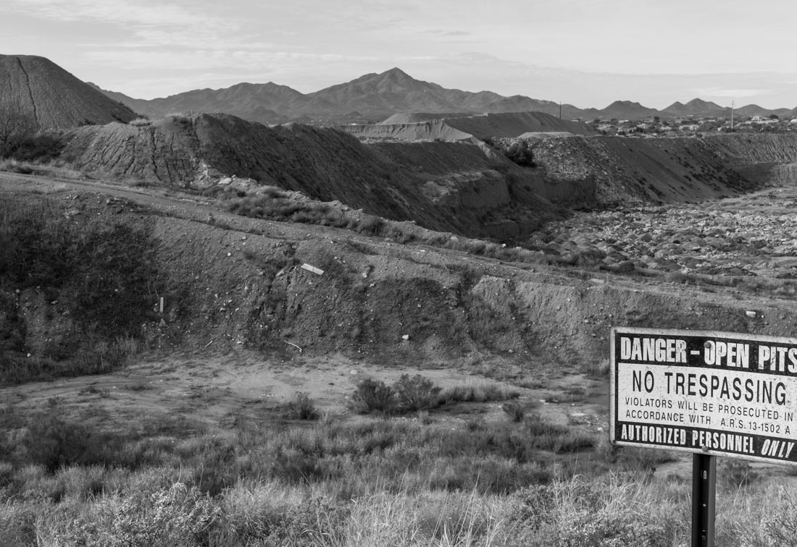Open Pits
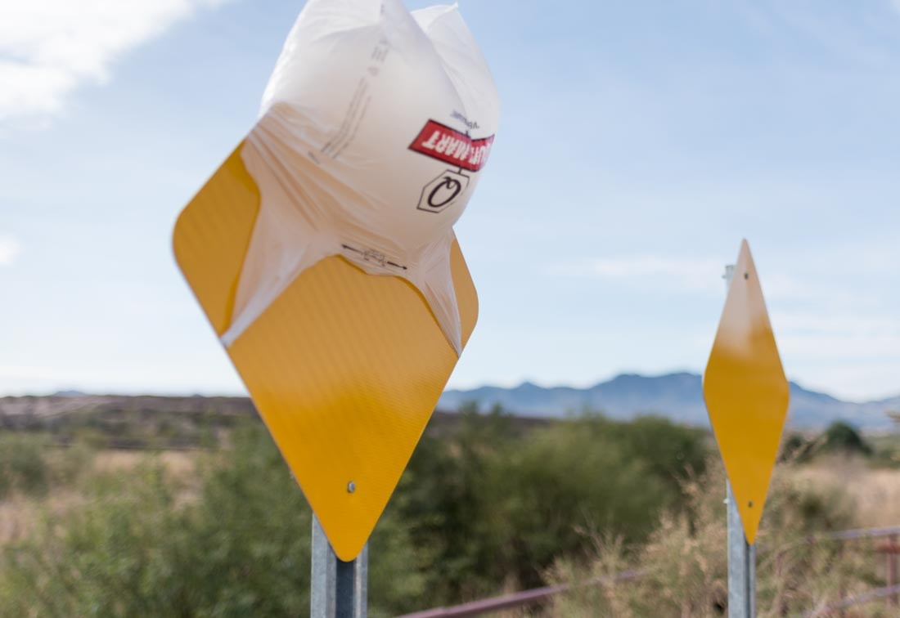Quik-Mart bag sign ornament
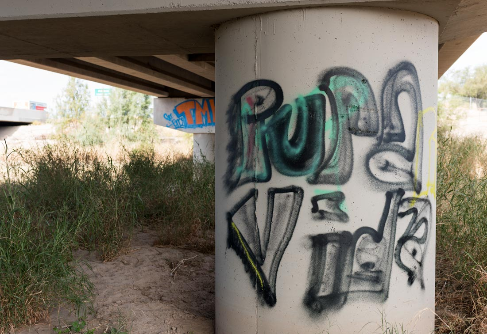Muy Puro

Haters gonna hate
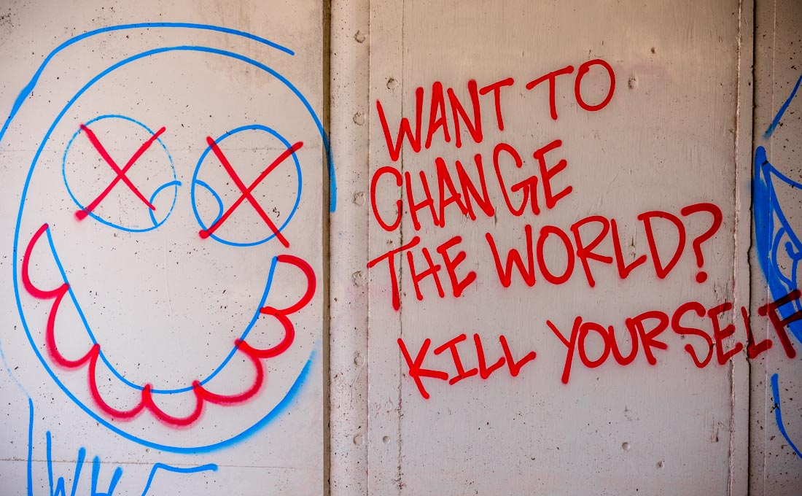kill yourself
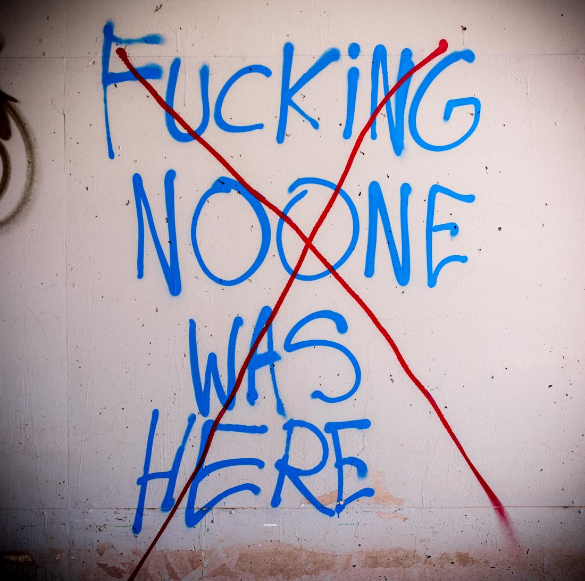indeed
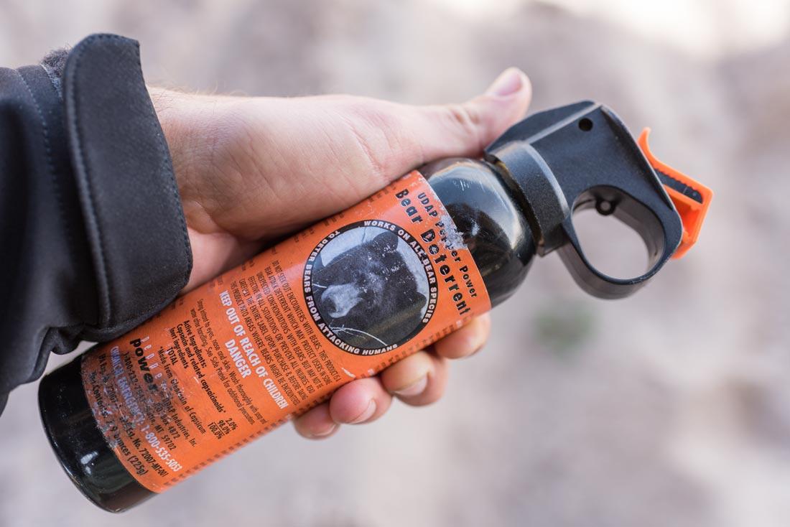homeless defense system
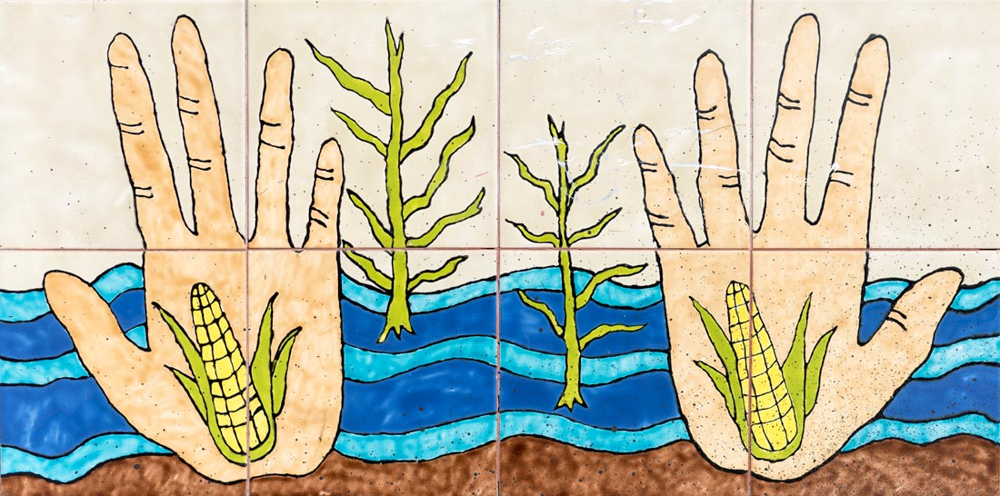Corn Hands
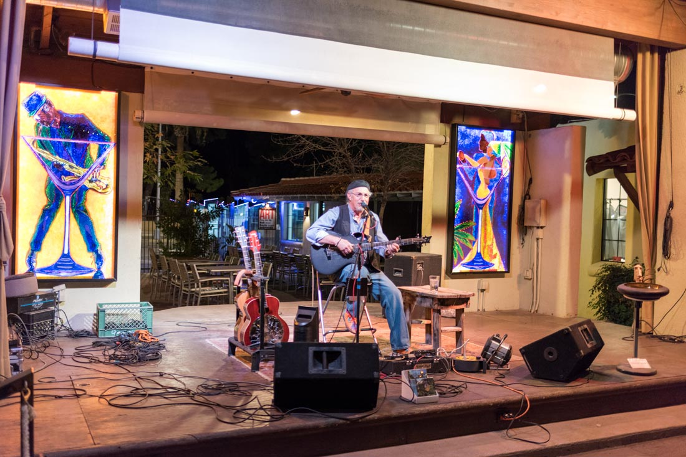Later than night Michelle played a show at Monterey Court. A younger couple was dancing salsa style, at least I'm pretty sure it was salsa. It was cool to see, and lessened my dislike for Tucson, a little bit.
Mark Berenson played a split set with MeShell. He played in a folk, bluegrass style.
Mark Berenson
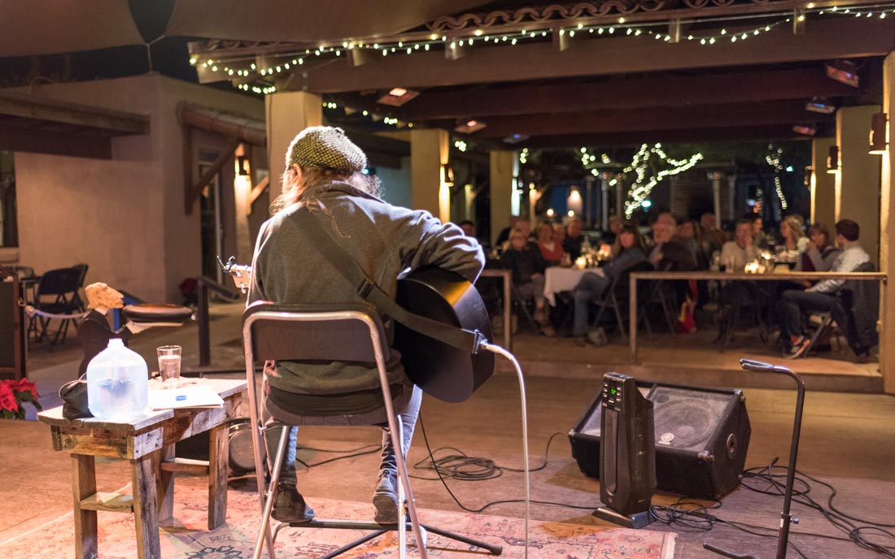Michelle @ Monterey Court

Excellent Dancers
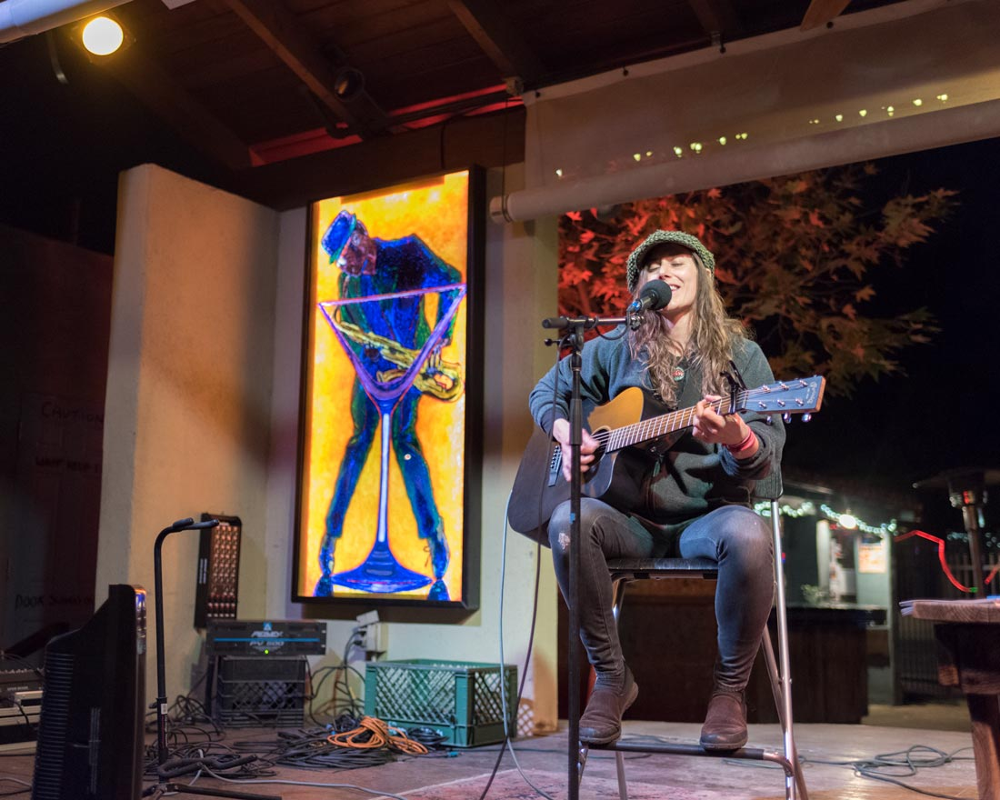Michelle